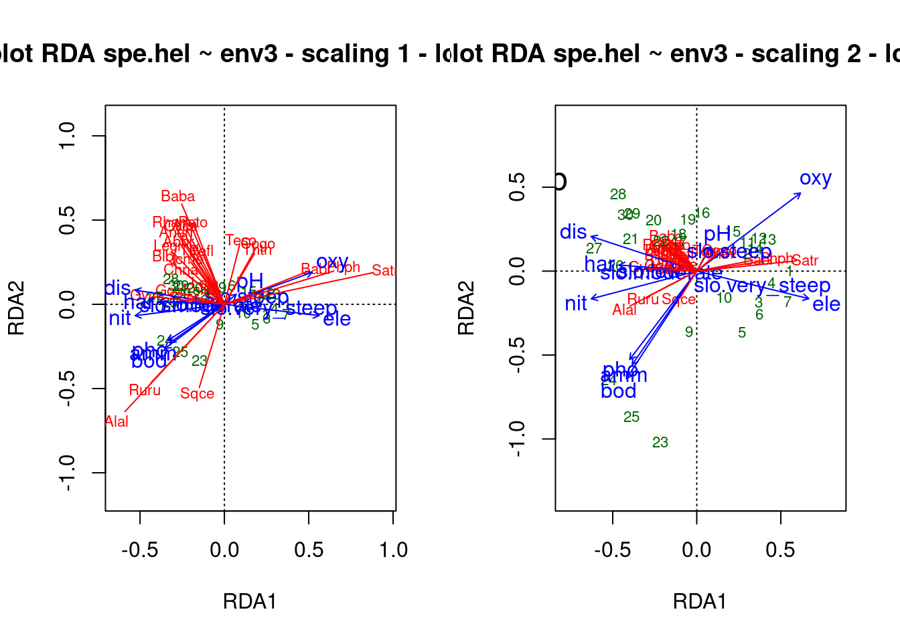
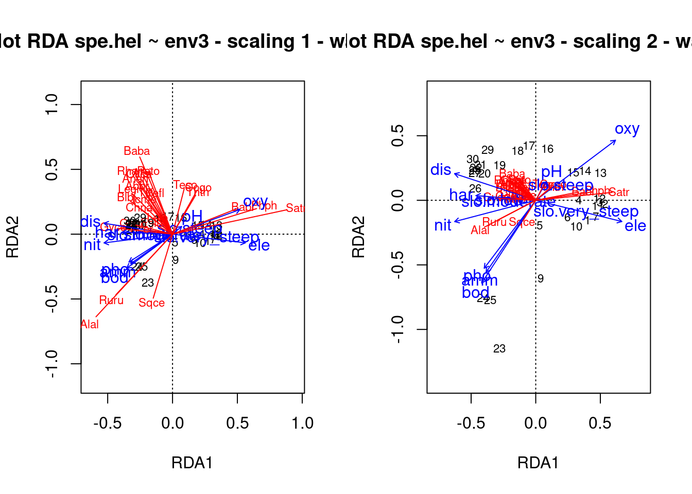
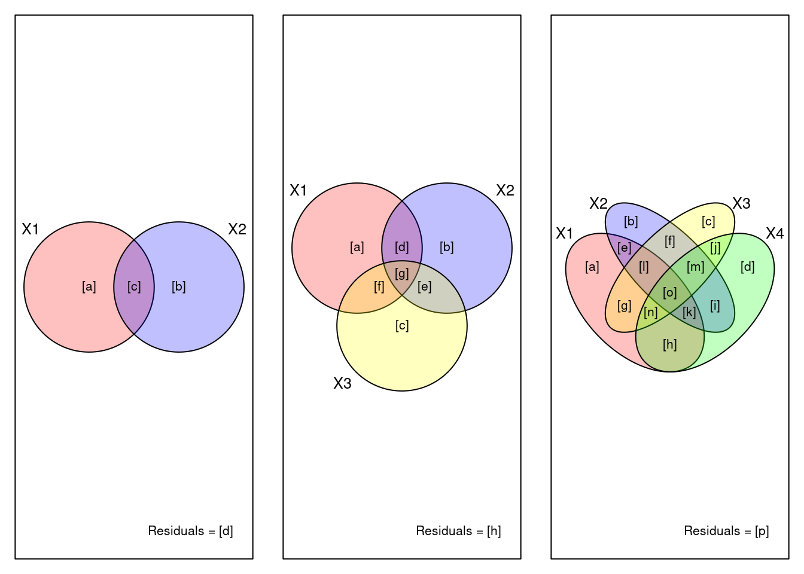
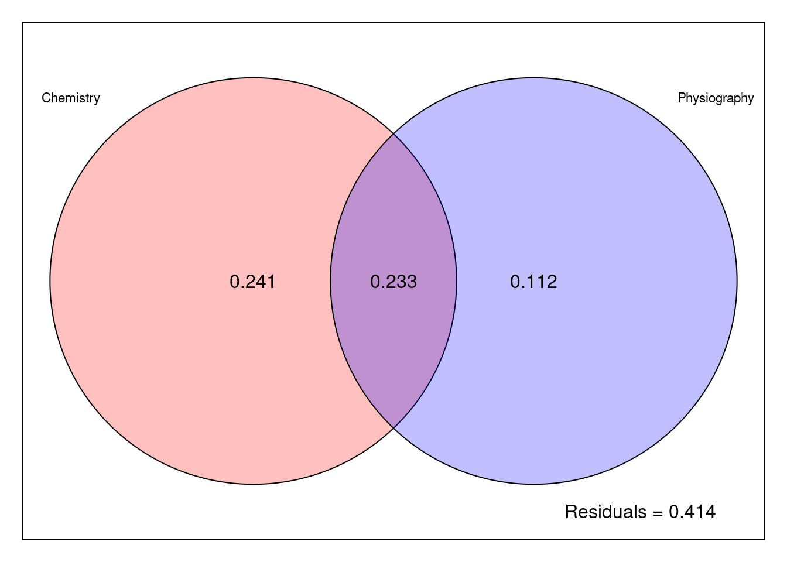

# Plot Arten
library("dave")
## Error in library("dave"): there is no package called 'dave'
# Daten anschauen
dim(sveg) # Vegetationsaufnahmen
## Error in eval(expr, envir, enclos): object 'sveg' not found
sveg[1:3, 1:3]
## Error in eval(expr, envir, enclos): object 'sveg' not found
dim(ssit) # Umweltvariablen
## Error in eval(expr, envir, enclos): object 'ssit' not found
ssit[1:3, 1:3]
## Error in eval(expr, envir, enclos): object 'ssit' not found
# CA rechnen
ca <- cca(sveg^0.5)
## Error in cca(sveg^0.5): could not find function "cca"
## Plot mit ausgewählten Arten
sel.spec <- c(3, 11, 23, 31, 39, 46, 72, 77, 96)
snames <- names(sveg[, sel.spec])
## Error in eval(expr, envir, enclos): object 'sveg' not found
snames
## Error in eval(expr, envir, enclos): object 'snames' not found
scores <- scores(ca, display = "species", scaling = "sites")
## Error in scores(ca, display = "species", scaling = "sites"): could not find function "scores"
sx <- scores[sel.spec, 1]
## Error in eval(expr, envir, enclos): object 'scores' not found
sy <- scores[sel.spec, 2]
## Error in eval(expr, envir, enclos): object 'scores' not found
plot(ca, display = "sites", type = "point")
## Error in plot(ca, display = "sites", type = "point"): object 'ca' not found
points(sx, sy, pch = 16)
## Error in points(sx, sy, pch = 16): object 'sx' not found
snames <- make.cepnames(snames)
## Error in make.cepnames(snames): could not find function "make.cepnames"
text(sx, sy, snames, pos = c(1, 2, 1, 1, 3, 2, 4, 3, 1), cex = 0.8)
## Error in text(sx, sy, snames, pos = c(1, 2, 1, 1, 3, 2, 4, 3, 1), cex = 0.8): object 'sx' not found
# Plot "response surfaces" in der CA
par(mfrow = c(1, 2))
plot(ca, display = "sites", type = "point")
## Error in plot(ca, display = "sites", type = "point"): object 'ca' not found
ordisurf(ca, ssit$pH.peat, add = TRUE, col = "red")
## Error in ordisurf(ca, ssit$pH.peat, add = TRUE, col = "red"): could not find function "ordisurf"
text(-1.5, 2, "pH", col = "red")
## Error in text.default(-1.5, 2, "pH", col = "red"): plot.new has not been called yet
plot(ca, display = "sites", type = "points")
## Error in plot(ca, display = "sites", type = "points"): object 'ca' not found
ordisurf(ca, ssit$Waterlev.av, add = TRUE, col = "blue")
## Error in ordisurf(ca, ssit$Waterlev.av, add = TRUE, col = "blue"): could not find function "ordisurf"
text(-1.5, 2, "Wasserstand", col = "blue")
## Error in text.default(-1.5, 2, "Wasserstand", col = "blue"): plot.new has not been called yet
# Daselbe mit einer DCA
par(mfrow = c(1, 2))
dca <- decorana(sveg)
## Error in decorana(sveg): could not find function "decorana"
plot(dca, display = "sites", type = "points")
## Error in plot(dca, display = "sites", type = "points"): object 'dca' not found
ordisurf(dca, ssit$pH.peat, add = TRUE)
## Error in ordisurf(dca, ssit$pH.peat, add = TRUE): could not find function "ordisurf"
text(-1, 1.5, "pH", col = "red")
## Error in text.default(-1, 1.5, "pH", col = "red"): plot.new has not been called yet
plot(dca, display = "sites", type = "points")
## Error in plot(dca, display = "sites", type = "points"): object 'dca' not found
ordisurf(dca, ssit$Waterlev.av, add = TRUE, col = "blue")
## Error in ordisurf(dca, ssit$Waterlev.av, add = TRUE, col = "blue"): could not find function "ordisurf"
text(-1, 1.5, "Wasserstand", col = "blue")
## Error in text.default(-1, 1.5, "Wasserstand", col = "blue"): plot.new has not been called yet
## Dasselbe mit NMDS
mde <- vegdist(sveg, method = "euclidean")
## Error in vegdist(sveg, method = "euclidean"): could not find function "vegdist"
mmds <- metaMDS(mde)
## Error in metaMDS(mde): could not find function "metaMDS"
library("MASS")
imds <- isoMDS(mde)
## Error in isoMDS(mde): object 'mde' not found
par(mfrow = c(2, 2))
plot(mmds$points)
## Error in plot(mmds$points): object 'mmds' not found
ordisurf(mmds, ssit$pH.peat, add = TRUE)
## Error in ordisurf(mmds, ssit$pH.peat, add = TRUE): could not find function "ordisurf"
text(-4, 4, "pH", col = "red")
## Error in text.default(-4, 4, "pH", col = "red"): plot.new has not been called yet
plot(mmds$points)
## Error in plot(mmds$points): object 'mmds' not found
ordisurf(mmds, ssit$Waterlev.av, add = TRUE, col = "blue")
## Error in ordisurf(mmds, ssit$Waterlev.av, add = TRUE, col = "blue"): could not find function "ordisurf"
text(-4, 4, "Wasserstand", col = "blue")
## Error in text.default(-4, 4, "Wasserstand", col = "blue"): plot.new has not been called yet
plot(imds$points)
## Error in plot(imds$points): object 'imds' not found
ordisurf(imds, ssit$pH.peat, add = TRUE)
## Error in ordisurf(imds, ssit$pH.peat, add = TRUE): could not find function "ordisurf"
text(-4, 4, "pH", col = "red")
## Error in text.default(-4, 4, "pH", col = "red"): plot.new has not been called yet
plot(imds$points)
## Error in plot(imds$points): object 'imds' not found
ordisurf(imds, ssit$Waterlev.av, add = T, col = "blue")
## Error in ordisurf(imds, ssit$Waterlev.av, add = T, col = "blue"): could not find function "ordisurf"
text(-4, 4, "Wasserstand", col = "blue")
## Error in text.default(-4, 4, "Wasserstand", col = "blue"): plot.new has not been called yetStat7: Demo
- Download dieses Demoscript via “</>Code” (oben rechts)
- Datensatz Doubs.RData
Ordinationen II
Interpretation von Ordinationen
Wildi pp. 96 et seq.
Constrained ordination
# Umweltvariablen wäheln, durch die die Ordination constrained werden soll
names(ssit)
## Error in eval(expr, envir, enclos): object 'ssit' not found
# 5 Variablen wählen
s5 <- c("pH.peat", "P.peat", "Waterlev.av", "CEC.peat", "Acidity.peat")
ssit5 <- ssit[s5]
## Error in eval(expr, envir, enclos): object 'ssit' not foundpar(mfrow = c(1, 2))
# RDA = constrained PCA
rda <- rda(sveg ~ ., ssit5)
## Error in rda(sveg ~ ., ssit5): could not find function "rda"
plot(rda)
## Error in plot(rda): object 'rda' not found
# CCA = constrained CA
cca <- cca(sveg ~ ., ssit5)
## Error in cca(sveg ~ ., ssit5): could not find function "cca"
plot(cca)
## Error in plot(cca): object 'cca' not found
# Unconstrained and constrained variance
tot <- cca$tot.chi
## Error in eval(expr, envir, enclos): object 'cca' not found
constr <- cca$CCA$tot.chi
## Error in eval(expr, envir, enclos): object 'cca' not found
constr / tot # Erklärte Varianz
## Error in eval(expr, envir, enclos): object 'constr' not foundRedundancy analysis (RDA)
Mehr Details zu RDA aus Borcard u. a. (2011)
# Datensatz Doubs in den workspace laden
load("datasets/stat5-8/Doubs.RData")# Daten anschauen
summary(spe)
## Cogo Satr Phph Babl Thth
## Min. :0.00 Min. :0.00 Min. :0.000 Min. :0.000 Min. :0.00
## 1st Qu.:0.00 1st Qu.:0.00 1st Qu.:0.000 1st Qu.:1.000 1st Qu.:0.00
## Median :0.00 Median :1.00 Median :3.000 Median :2.000 Median :0.00
## Mean :0.50 Mean :1.90 Mean :2.267 Mean :2.433 Mean :0.50
## 3rd Qu.:0.75 3rd Qu.:3.75 3rd Qu.:4.000 3rd Qu.:4.000 3rd Qu.:0.75
## Max. :3.00 Max. :5.00 Max. :5.000 Max. :5.000 Max. :4.00
## Teso Chna Pato Lele
## Min. :0.0000 Min. :0.0 Min. :0.0000 Min. :0.000
## 1st Qu.:0.0000 1st Qu.:0.0 1st Qu.:0.0000 1st Qu.:0.000
## Median :0.0000 Median :0.0 Median :0.0000 Median :1.000
## Mean :0.6333 Mean :0.6 Mean :0.8667 Mean :1.433
## 3rd Qu.:0.7500 3rd Qu.:1.0 3rd Qu.:2.0000 3rd Qu.:2.000
## Max. :5.0000 Max. :3.0 Max. :4.0000 Max. :5.000
## Sqce Baba Albi Gogo Eslu
## Min. :0.000 Min. :0.000 Min. :0.0 Min. :0.000 Min. :0.000
## 1st Qu.:1.000 1st Qu.:0.000 1st Qu.:0.0 1st Qu.:0.000 1st Qu.:0.000
## Median :2.000 Median :0.000 Median :0.0 Median :1.000 Median :1.000
## Mean :1.867 Mean :1.433 Mean :0.9 Mean :1.833 Mean :1.333
## 3rd Qu.:3.000 3rd Qu.:3.000 3rd Qu.:1.0 3rd Qu.:3.750 3rd Qu.:2.000
## Max. :5.000 Max. :5.000 Max. :5.0 Max. :5.000 Max. :5.000
## Pefl Rham Legi Scer Cyca
## Min. :0.0 Min. :0.0 Min. :0.0000 Min. :0.0 Min. :0.0000
## 1st Qu.:0.0 1st Qu.:0.0 1st Qu.:0.0000 1st Qu.:0.0 1st Qu.:0.0000
## Median :0.5 Median :0.0 Median :0.0000 Median :0.0 Median :0.0000
## Mean :1.2 Mean :1.1 Mean :0.9667 Mean :0.7 Mean :0.8333
## 3rd Qu.:2.0 3rd Qu.:2.0 3rd Qu.:1.7500 3rd Qu.:1.0 3rd Qu.:1.0000
## Max. :5.0 Max. :5.0 Max. :5.0000 Max. :5.0 Max. :5.0000
## Titi Abbr Icme Gyce Ruru
## Min. :0.0 Min. :0.0000 Min. :0.0 Min. :0.000 Min. :0.0
## 1st Qu.:0.0 1st Qu.:0.0000 1st Qu.:0.0 1st Qu.:0.000 1st Qu.:0.0
## Median :1.0 Median :0.0000 Median :0.0 Median :0.000 Median :1.0
## Mean :1.5 Mean :0.8667 Mean :0.6 Mean :1.267 Mean :2.1
## 3rd Qu.:3.0 3rd Qu.:1.0000 3rd Qu.:0.0 3rd Qu.:2.000 3rd Qu.:5.0
## Max. :5.0 Max. :5.0000 Max. :5.0 Max. :5.000 Max. :5.0
## Blbj Alal Anan
## Min. :0.000 Min. :0.0 Min. :0.00
## 1st Qu.:0.000 1st Qu.:0.0 1st Qu.:0.00
## Median :0.000 Median :0.0 Median :0.00
## Mean :1.033 Mean :1.9 Mean :0.90
## 3rd Qu.:1.750 3rd Qu.:5.0 3rd Qu.:1.75
## Max. :5.000 Max. :5.0 Max. :5.00
summary(env)
## dfs ele slo dis
## Min. : 0.30 Min. :172.0 Min. : 0.200 Min. : 0.84
## 1st Qu.: 54.45 1st Qu.:248.0 1st Qu.: 0.525 1st Qu.: 4.20
## Median :175.20 Median :395.0 Median : 1.200 Median :22.10
## Mean :188.23 Mean :481.6 Mean : 3.497 Mean :22.20
## 3rd Qu.:301.73 3rd Qu.:782.0 3rd Qu.: 2.875 3rd Qu.:28.57
## Max. :453.00 Max. :934.0 Max. :48.000 Max. :69.00
## pH har pho nit
## Min. :7.700 Min. : 40.00 Min. :0.0100 Min. :0.150
## 1st Qu.:7.925 1st Qu.: 84.25 1st Qu.:0.1250 1st Qu.:0.505
## Median :8.000 Median : 89.00 Median :0.2850 Median :1.600
## Mean :8.050 Mean : 86.10 Mean :0.5577 Mean :1.654
## 3rd Qu.:8.100 3rd Qu.: 96.75 3rd Qu.:0.5600 3rd Qu.:2.425
## Max. :8.600 Max. :110.00 Max. :4.2200 Max. :6.200
## amm oxy bod
## Min. :0.0000 Min. : 4.100 Min. : 1.300
## 1st Qu.:0.0000 1st Qu.: 8.025 1st Qu.: 2.725
## Median :0.1000 Median :10.200 Median : 4.150
## Mean :0.2093 Mean : 9.390 Mean : 5.117
## 3rd Qu.:0.2000 3rd Qu.:10.900 3rd Qu.: 5.275
## Max. :1.8000 Max. :12.400 Max. :16.700
summary(spa)
## X Y
## Min. : 0.00 Min. : 20.00
## 1st Qu.: 80.94 1st Qu.: 42.13
## Median : 96.56 Median : 73.14
## Mean : 97.58 Mean : 66.57
## 3rd Qu.:130.03 3rd Qu.: 89.13
## Max. :159.44 Max. :105.43## Entfernen der Untersuchungsfläche ohne Arten
spe <- spe[-8, ]
env <- env[-8, ]
spa <- spa[-8, ]
## Karten für 4 Fischarten
par(mfrow = c(2, 2))
plot(spa, asp = 1, col = "brown", cex = spe$Satr, xlab = "x (km)", ylab = "y (km)", main = "Brown trout")
lines(spa, col = "light blue")
plot(spa, asp = 1, col = "brown", cex = spe$Thth, xlab = "x (km)", ylab = "y (km)", main = "Grayling")
lines(spa, col = "light blue")
plot(spa, asp = 1, col = "brown", cex = spe$Alal, xlab = "x (km)", ylab = "y (km)", main = "Bleak")
lines(spa, col = "light blue")
plot(spa, asp = 1, col = "brown", cex = spe$Titi, xlab = "x (km)", ylab = "y (km)", main = "Tench")
lines(spa, col = "light blue")
# Set aside the variable 'dfs' (distance from the source) for later use
dfs <- env[, 1]
# Remove the 'dfs' variable from the env data frame
env2 <- env[, -1]
# Recode the slope variable (slo) into a factor (qualitative)
# variable to show how these are handled in the ordinations
slo2 <- rep(".very_steep", nrow(env))
slo2[env$slo <= quantile(env$slo)[4]] <- ".steep"
slo2[env$slo <= quantile(env$slo)[3]] <- ".moderate"
slo2[env$slo <= quantile(env$slo)[2]] <- ".low"
slo2 <- factor(slo2, levels = c(".low", ".moderate", ".steep", ".very_steep"))
table(slo2)
## slo2
## .low .moderate .steep .very_steep
## 8 8 6 7
# Create an env3 data frame with slope as a qualitative variable
env3 <- env2
env3$slo <- slo2
# Create two subsets of explanatory variables
# Physiography (upstream-downstream gradient)
envtopo <- env2[, c(1:3)]
names(envtopo)
## [1] "ele" "slo" "dis"
# Water quality
envchem <- env2[, c(4:10)]
names(envchem)
## [1] "pH" "har" "pho" "nit" "amm" "oxy" "bod"
# Hellinger-transform the species dataset
library("vegan")
spe.hel <- decostand(spe, "hellinger")spe.hel# Redundancy analysis (RDA)
# RDA of the Hellinger-transformed fish species data, constrained
# by all the environmental variables contained in env3
spe.rda <- rda(spe.hel ~ ., env3) # Observe the shortcut formulaspe.rda
summary(spe.rda) # Scaling 2 (default)## Canonical coefficients from the rda object
coef(spe.rda)## Unadjusted R^2 und Adjusted R^2
(R2 <- RsquareAdj(spe.rda))
## $r.squared
## [1] 0.7270922
##
## $adj.r.squared
## [1] 0.5224114
### Triplots of the rda results (lc scores)
### Site scores as linear combinations of the environmental variables
## dev.new(title = "RDA scaling 1 and 2 + lc", width = 12, height = 6, noRStudioGD = TRUE)
par(mfrow = c(1, 2))
## Scaling 1
plot(spe.rda, scaling = 1, display = c("sp", "lc", "cn"), main = "Triplot RDA spe.hel ~ env3 - scaling 1 - lc scores")
spe.sc1 <- scores(spe.rda, choices = 1:2, scaling = 1, display = "sp")
arrows(0, 0, spe.sc1[, 1] * 0.92, spe.sc1[, 2] * 0.92, length = 0, lty = 1, col = "red")
text(-0.75, 0.7, "a", cex = 1.5)
## Scaling 2
plot(spe.rda, display = c("sp", "lc", "cn"), main = "Triplot RDA spe.hel ~ env3 - scaling 2 - lc scores")
spe.sc2 <- scores(spe.rda, choices = 1:2, display = "sp")
arrows(0, 0, spe.sc2[, 1] * 0.92, spe.sc2[, 2] * 0.92, length = 0, lty = 1, col = "red")
text(-0.82, 0.55, "b", cex = 1.5)
### Triplots of the rda results (wa scores)
### Site scores as weighted averages (vegan's default)
## Scaling 1 : distance triplot
## dev.new(title = "RDA plot", width = 12, height = 6, noRStudioGD = TRUE)
par(mfrow = c(1, 2))
plot(spe.rda, scaling = 1, main = "Triplot RDA spe.hel ~ env3 - scaling 1 - wa scores")
arrows(0, 0, spe.sc1[, 1] * 0.92, spe.sc1[, 2] * 0.92, length = 0, lty = 1, col = "red")
## Scaling 2 (default) : correlation triplot
plot(spe.rda, main = "Triplot RDA spe.hel ~ env3 - scaling 2 - wa scores")
arrows(0, 0, spe.sc2[, 1] * 0.92, spe.sc2[, 2] * 0.92, length = 0, lty = 1, col = "red")
## Select species with goodness-of-fit at least 0.6 in the
## ordination plane formed by axes 1 and 2
spe.good <- goodness(spe.rda)
sel.sp <- which(spe.good[, 2] >= 0.6)
sel.sp
## Satr Phph Chna Baba Albi Rham Legi Cyca Abbr Gyce Ruru Blbj Alal Anan
## 2 3 7 11 12 16 17 19 21 23 24 25 26 27
## Global test of the RDA result
anova(spe.rda, permutations = how(nperm = 999))
## Permutation test for rda under reduced model
## Permutation: free
## Number of permutations: 999
##
## Model: rda(formula = spe.hel ~ ele + slo + dis + pH + har + pho + nit + amm + oxy + bod, data = env3)
## Df Variance F Pr(>F)
## Model 12 0.36537 3.5523 0.001 ***
## Residual 16 0.13714
## ---
## Signif. codes: 0 '***' 0.001 '**' 0.01 '*' 0.05 '.' 0.1 ' ' 1
## Tests of all canonical axes
anova(spe.rda, by = "axis", permutations = how(nperm = 999))
## Permutation test for rda under reduced model
## Forward tests for axes
## Permutation: free
## Number of permutations: 999
##
## Model: rda(formula = spe.hel ~ ele + slo + dis + pH + har + pho + nit + amm + oxy + bod, data = env3)
## Df Variance F Pr(>F)
## RDA1 1 0.228083 26.6105 0.001 ***
## RDA2 1 0.053698 6.2649 0.005 **
## RDA3 1 0.032119 3.7473 0.350
## RDA4 1 0.023206 2.7074 0.759
## RDA5 1 0.008699 1.0149 1.000
## RDA6 1 0.007218 0.8421 1.000
## RDA7 1 0.004869 0.5681 1.000
## RDA8 1 0.002924 0.3412 1.000
## RDA9 1 0.002141 0.2498 1.000
## RDA10 1 0.001160 0.1353 1.000
## RDA11 1 0.000914 0.1066 1.000
## RDA12 1 0.000341 0.0397 1.000
## Residual 16 0.137139
## ---
## Signif. codes: 0 '***' 0.001 '**' 0.01 '*' 0.05 '.' 0.1 ' ' 1
### Partial RDA: effect of water chemistry, holding physiography
### constant
## Simple syntax; X and W may be in separate tables of quantitative
## variables
(spechem.physio <- rda(spe.hel, envchem, envtopo))
## Call: rda(X = spe.hel, Y = envchem, Z = envtopo)
##
## Inertia Proportion Rank
## Total 0.5025 1.0000
## Conditional 0.2087 0.4152 3
## Constrained 0.1602 0.3189 7
## Unconstrained 0.1336 0.2659 18
## Inertia is variance
##
## Eigenvalues for constrained axes:
## RDA1 RDA2 RDA3 RDA4 RDA5 RDA6 RDA7
## 0.09136 0.04590 0.00928 0.00625 0.00387 0.00214 0.00142
##
## Eigenvalues for unconstrained axes:
## PC1 PC2 PC3 PC4 PC5 PC6 PC7 PC8
## 0.04643 0.02071 0.01746 0.01326 0.00975 0.00588 0.00512 0.00400
## (Showing 8 of 18 unconstrained eigenvalues)summary(spechem.physio)## Formula interface; X and W variables must be in the same
## data frame
(spechem.physio2 <- rda(spe.hel ~ pH + har + pho + nit + amm + oxy + bod
+ Condition(ele + slo + dis), data = env2))
## Call: rda(formula = spe.hel ~ pH + har + pho + nit + amm + oxy + bod +
## Condition(ele + slo + dis), data = env2)
##
## Inertia Proportion Rank
## Total 0.5025 1.0000
## Conditional 0.2087 0.4152 3
## Constrained 0.1602 0.3189 7
## Unconstrained 0.1336 0.2659 18
## Inertia is variance
##
## Eigenvalues for constrained axes:
## RDA1 RDA2 RDA3 RDA4 RDA5 RDA6 RDA7
## 0.09136 0.04590 0.00928 0.00625 0.00387 0.00214 0.00142
##
## Eigenvalues for unconstrained axes:
## PC1 PC2 PC3 PC4 PC5 PC6 PC7 PC8
## 0.04643 0.02071 0.01746 0.01326 0.00975 0.00588 0.00512 0.00400
## (Showing 8 of 18 unconstrained eigenvalues)
## Test of the partial RDA, using the results with the formula
## interface to allow the tests of the axes to be run
anova(spechem.physio2, permutations = how(nperm = 999))
## Permutation test for rda under reduced model
## Permutation: free
## Number of permutations: 999
##
## Model: rda(formula = spe.hel ~ pH + har + pho + nit + amm + oxy + bod + Condition(ele + slo + dis), data = env2)
## Df Variance F Pr(>F)
## Model 7 0.16023 3.0836 0.001 ***
## Residual 18 0.13362
## ---
## Signif. codes: 0 '***' 0.001 '**' 0.01 '*' 0.05 '.' 0.1 ' ' 1
anova(spechem.physio2, permutations = how(nperm = 999), by = "axis")
## Permutation test for rda under reduced model
## Forward tests for axes
## Permutation: free
## Number of permutations: 999
##
## Model: rda(formula = spe.hel ~ pH + har + pho + nit + amm + oxy + bod + Condition(ele + slo + dis), data = env2)
## Df Variance F Pr(>F)
## RDA1 1 0.091363 12.3078 0.001 ***
## RDA2 1 0.045904 6.1839 0.016 *
## RDA3 1 0.009277 1.2497 0.964
## RDA4 1 0.006250 0.8420 0.992
## RDA5 1 0.003868 0.5210 0.999
## RDA6 1 0.002145 0.2890 1.000
## RDA7 1 0.001424 0.1919 0.999
## Residual 18 0.133617
## ---
## Signif. codes: 0 '***' 0.001 '**' 0.01 '*' 0.05 '.' 0.1 ' ' 1Variation partitionig
### Variation partitioning with two sets of explanatory variables
## Explanation of fraction labels (two, three and four explanatory
## matrices) with optional colours
par(mfrow = c(1, 3), mar = c(1, 1, 1, 1))
showvarparts(2, bg = c("red", "blue"))
showvarparts(3, bg = c("red", "blue", "yellow"))
showvarparts(4, bg = c("red", "blue", "yellow", "green"))
### 1. Variation partitioning with all explanatory variables
### (except dfs)
(spe.part.all <- varpart(spe.hel, envchem, envtopo))
##
## Partition of variance in RDA
##
## Call: varpart(Y = spe.hel, X = envchem, envtopo)
##
## Explanatory tables:
## X1: envchem
## X2: envtopo
##
## No. of explanatory tables: 2
## Total variation (SS): 14.07
## Variance: 0.50251
## No. of observations: 29
##
## Partition table:
## Df R.squared Adj.R.squared Testable
## [a+c] = X1 7 0.60579 0.47439 TRUE
## [b+c] = X2 3 0.41524 0.34507 TRUE
## [a+b+c] = X1+X2 10 0.73410 0.58638 TRUE
## Individual fractions
## [a] = X1|X2 7 0.24131 TRUE
## [b] = X2|X1 3 0.11199 TRUE
## [c] 0 0.23308 FALSE
## [d] = Residuals 0.41362 FALSE
## ---
## Use function 'rda' to test significance of fractions of interest
## Plot of the partitioning results
par(mfrow = c(1, 1))
plot(spe.part.all,
digits = 2, bg = c("red", "blue"),
Xnames = c("Chemistry", "Physiography"),
id.size = 0.7
)